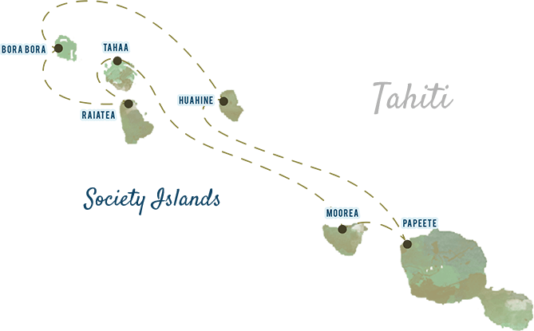

<!doctype html>
<!--[if lt IE 7]>      <html class="no-js lt-ie9 lt-ie8 lt-ie7" lang=""> <![endif]-->
<!--[if IE 7]>         <html class="no-js lt-ie9 lt-ie8" lang=""> <![endif]-->
<!--[if IE 8]>         <html class="no-js lt-ie9" lang=""> <![endif]-->
<!--[if gt IE 8]><!--> <html class="no-js" lang=""> <!--<![endif]-->
    <head>
        <meta charset="utf-8">
        <meta http-equiv="X-UA-Compatible" content="IE=edge,chrome=1">
        <title>Visit Mars! - Martian Tourism VCB</title>
        <meta name="robots" content="index,follow" />
        <meta name="description" content="" />
        <meta name="viewport" content="width=device-width, initial-scale=1">
		<link rel="shortcut icon" href="/assets/images/favicon.ico" />
		<link rel="apple-touch-icon" href="/assets/images/apple-touch-icon.png" />
		<link rel="apple-touch-icon" sizes="72x72" href="/assets/images/apple-touch-icon-72x72.png" />
		<link rel="apple-touch-icon" sizes="114x114" href="/assets/images/apple-touch-icon-114x114.png" />
		<link rel="stylesheet" href="/assets/styles/styles.css">

        <script src="/assets/scripts/modernizr.js"></script>
    </head>
    <body>
        <!--[if lt IE 8]>
            <p class="browserupgrade">You are using an <strong>outdated</strong> browser. Please <a href="http://browsehappy.com/">upgrade your browser</a> to improve your experience.</p>
        <![endif]-->
        
        <div class="tahiti-wrapper">
	        
	        <div class="hero">
		        <a href="https://www.mmgyglobal.com" target="_blank"></a>
		        
		        <div class="hero--content">
			        <h1 class="hero--h1">Ready to get away from it all?</h1>
			        <h2 class="hero--h2">Try 140 million miles away.</h2>
		        </div>
		        
		        
	        </div>
	        
	        <div class="feature">
		        <div class="feature--container">
			        
			        <div class="intro">
				        <div class="intro--content">
					        <h1>One island <span>is Not Enough</span></h1>
					        <p>You haven’t seen one Tahitian island, let alone six, aboard a luxury sailing yacht. Depart from Los Angeles (LAX) and set foot in Tahiti in only eight hours. Then, step aboard <em>Wind Spirit</em>, a luxury yacht that takes you to the most serene destinations in Tahiti. Experience intimate harbors, crystal-clear coves, and pristine white sands massaging your every step. The islands of French Polynesia invite you to discover their own distinct magic. Hop ashore to the enchanted landscapes of Moorea, or explore Raiatea’s lush forests and black pearl farms. Melt into the warm lagoons surrounding the exquisite peaks of Bora Bora. Relax on board as your yacht glides into small bays other cruise ships can’t reach and drops anchor in shallow waters teeming with schools of tropical fish. Jump into a beautiful palm-fringed lagoon from the Watersports Platform. Or simply unwind on deck, enjoying paradise and endless pampering. This is how Tahiti was meant to be seen.</p>
					        <p class="intro--content--disclaimer">Book your luxury Tahiti cruise with Windstar by April 1, 2016, to enjoy this limited-time offer.</p>
				        </div>
				        <div class="intro--sidebar">
					        <span class="intro--sidebar--promo">Free Air + Free Hotel</span>
					        
					        <a href="http://www.windstarcruises.com/Find-Cruise/?destination=TAHITI" class="btn">See Voyage Dates</a>
				        </div>
			        </div>
			        
			        <div class="quote">
				        <p>"Windstar offers a distinctly different cruise experience in Tahiti."</p>
				        <span class="quote--source">– USA Today</span>
			        </div>
			        
			        
		        </div><!-- /feature--container -->
				
				<div class="booking">
					<div class="booking--photo"></div>
					<div class="booking--content">
						<em>FREE Air & FREE Hotel Includes:</em>
						<ul>
							<li>Round-trip airfare from Los Angeles (LAX) to Papeete on Air Tahiti Nui</li>
							<li>Overnight hotel stay at Le Méridien Papeete Hotel</li>
							<li>Arrival transfers from airport to hotel and hotel to Wind Spirit yacht</li>
							<li>Post-cruise day room at Le Méridien Papeete Hotel</li>
							<li>Departing transfers from yacht to hotel and hotel to airport</li>
							<li>Airline taxes and fuel surcharges</li>
						</ul>
						
						<div class="booking--cta">
							<a href="http://www.windstarcruises.com/Find-Cruise/?destination=TAHITI" class="btn">See Voyages</a>
						</div>
						
						<p>Book by April 1, 2016.</p>	
					</div>
			    </div>
			    
		        
	        </div>
	        
	        <div class="itinerary">
		        
		        <div class="itinerary--dream-of-tahiti">
			        
			        <div class="itinerary--dream-of-tahiti--content">
						<h2>Dreams of Tahiti</h2>
						<h3>7 Days: Papeete to Papeete</h3>
						<p>See the best of Tahiti in seven days. Embark on drift snorkeling excursions among coral gardens in Tahaa. Explore the majestic palm-fringed Three Coconut Trail in Moorea. And indulge in Bora Bora’s kaleidoscope of colored seas and stunning white-sand beaches.</p>
						<div class="itinerary--details">
							<span class="itinerary--details--price">STARTING AT $3,599 pp</span>
							<span class="itinerary--details--airfare">• Includes Airfare + Hotel</span>
						</div>
						<h4>Complimentary Private Event - Bora Bora: Private Island Celebration</h4>
						<p>Your private island celebration on the beach promises to be an extraordinary event with a menu carefully selected by Windstar’s executive chef and Polynesian fire dancers displaying their artistry and local traditions.</p>


			        </div>
			        <div class="itinerary--dream-of-tahiti--itinerary">
				        <h3 class="itinerary--itinerary-title">7 Day Itinerary</h3>
				        <ul>
							<li>Day 1 Papeete</li>
							<li>Day 2 Moorea</li>
							<li>Day 3 Tahaa</li>
							<li>Days 3–4 Raiatea (Overnight)</li>
							<li>Days 5­­–6 Bora Bora (Overnight)</li>
							<li>Day 7 Huahine</li>
							<li>Day 8 Papeete</li>
				        </ul>
				        
				        <a href="http://www.windstarcruises.com/cruise/Tahiti/Dreams-of-Tahiti/?id=9&sid=17253" class="btn">See Voyage</a>
			        </div>
		        </div>
		        
		        
		        <div class="itinerary--tuamotu-islands">
			        
			        
			        <div class="itinerary--tuamotu-islands--content">
						<h2>Tahiti & the Tuamotu Islands</h2>
						<h3>10 or 11 Days: Papeete to Papeete</h3>
						<p>Enjoy sunny Fakarava, one of earth’s most beautiful places that’s been named a UNESCO Biosphere Reserve. Discover rare species of nesting birds and marine life living in harmony and immerse yourself in Tahiti’s authentic experiences.</p>
						<div class="itinerary--details">
							<span class="itinerary--details--price">STARTING AT $5,599 pp</span>
							<span class="itinerary--details--airfare">• Includes Airfare + Hotel</span>
						</div>
						<h4>Complimentary Private Event - Bora Bora: Private Island Celebration</h4>
						<p>Your private island celebration on the beach promises to be an extraordinary event with a menu carefully selected by Windstar’s executive chef and Polynesian fire dancers displaying their artistry and local traditions.</p>


			        </div>
			        <div class="itinerary--tuamotu-islands--itinerary">
				        <h3 class="itinerary--itinerary-title">10 Day Itinerary</h3>
				        <ul>
							<li>Day 1 Papeete, Society Islands</li>
							<li>Day 2 At Sea</li>
							<li>Day 3 Fakarava Biosphere Reserve</li>
							<li>Day 4 Rangiroa, Tuamotu Islands</li>
							<li>Day 5 At Sea</li>
							<li>Day 6 Tahaa, Society Islands</li>
							<li>Day 7 Huahine, Society Islands</li>
							<li>Days 8 - 9 Bora Bora, Society Islands (overnight)</li>
							<li>Day 10 Moorea, Society Islands</li>
							<li>Day 11 Papeete, Society Islands</li>
							<li><em>11-day itinerary also visits Takapoto and Raiatea, but does not include Tahaa.</em></li>
				        </ul>
				        
				        <a href="http://www.windstarcruises.com/cruise/Tahiti/Tahiti-and-the-Tuamotu-Islands/?id=136&sid=17256" class="btn">See Voyage</a>
			        </div>
		        </div>
		        
	        </div>
	        
	        
        </div><!-- /tahiti-wrapper -->
		
		<script src="https://cdnjs.cloudflare.com/ajax/libs/jquery/2.1.4/jquery.min.js"></script>
        <script src="/assets/scripts/scripts.js"></script>
        
        
    </body>
</html>